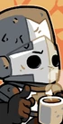
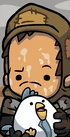
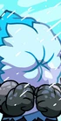
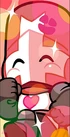
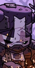
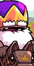
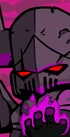
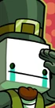

Personagens Jogáveis
Esta é uma lista dos personagens jogáveis em Castle Crashers.
OBSERVAÇÃO: Esta lista não está em ordem e é necessária a DLC para desbloquear alguns personagens.
| Imagem | Nome | Elemento | Arma inicial | Disponibilidade |
|---|---|---|---|---|
 |
Cavaleiro Verde | Veneno | Espada Fina | Disponível no início do jogo |
 |
Cavaleiro Vermelho | Eletricidade | Maça | Disponível no início do jogo |
 |
Cavaleiro Azul | Gelo | Espada Embainhada | Disponível no início do jogo |
 |
Cavaleiro Laranja | Fogo | Machado Largo | Disponível no início do jogo |
 |
Cavaleiro Cinza | Não elemental | Espada Fina | Derrote o Chefe Bárbaro |
 |
Bárbaro | Não elemental | Machado Bárbaro | Derrote a Arena do Rei |
 |
Ladrão | Não elemental | Espada do ladrão | Derrote a Arena dos Ladrões |
 |
Cabeça de Cone | Não elemental | Sabre de luz | Derrote a Arena do Vulcão |
 |
Camponês | Não elemental | Colher de pau | Derrote a Arena Camponesa |
 |
Esquimó | Gelo | Lança de pesca | Derrote a Arena de Gelo |
 |
Alien | Não elemental | Arma do Alien |
XBOX 360: Complete a fase 1 do jogo Alien Hominid HD
Remastered / PC / PS3: Complete a fase Alien Ship |
 |
Guarda Real | Não elemental | Cimitarra | Termine o jogo com o Guerreiro Verde |
 |
Sarraceno | Não elemental | Cimitarra | Vença o jogo com o Guarda Real |
 |
Cavaleiro Rosa | Não elemental | Pirulito |
XBOX 360 / PC / PS3: Pink Knight Pack DLC
Remastered: Disponível no início do jogo |
 |
Ferreiro | Não elemental | Martelo |
XBOX 360 / PC / PS3: Legend of the blacksmith DLC
Remastered: Disponível no início do jogo |
 |
Rei | Não elemental | Maça do Rei |
XBOX 360: King Pack DLC
Remastered / PC / PS3: Complete a Pipistrello's Cave no Modo Insano |
 |
Necromancer | Não elemental | Espada Maligna |
XBOX 360: Necromantic Pack DLC
Remastered / PC / PS3: Complete Industrial Castle no Modo Insano |
 |
Servo do Culto | Não elemental | Bastão luminoso |
XBOX 360: Necromantic Pack DLC
Remastered / PC / PS3: Complete Industrial Castle no Modo Insano |
 |
Hatty Hattington | Não elemental | Espada de esmeralda |
XBOX 360: Obtenha a conquista BattleBlock Theater no Xbox Live
PS3: Can't Stop Crying Pack DLC PC / Remastered: Tenha BattleBlock Theater e Castle Crashers na mesma conta Steam. |
 |
Pintor Jr. | Não elemental | Lápis | PC: Painter Boss Paradise DLC |